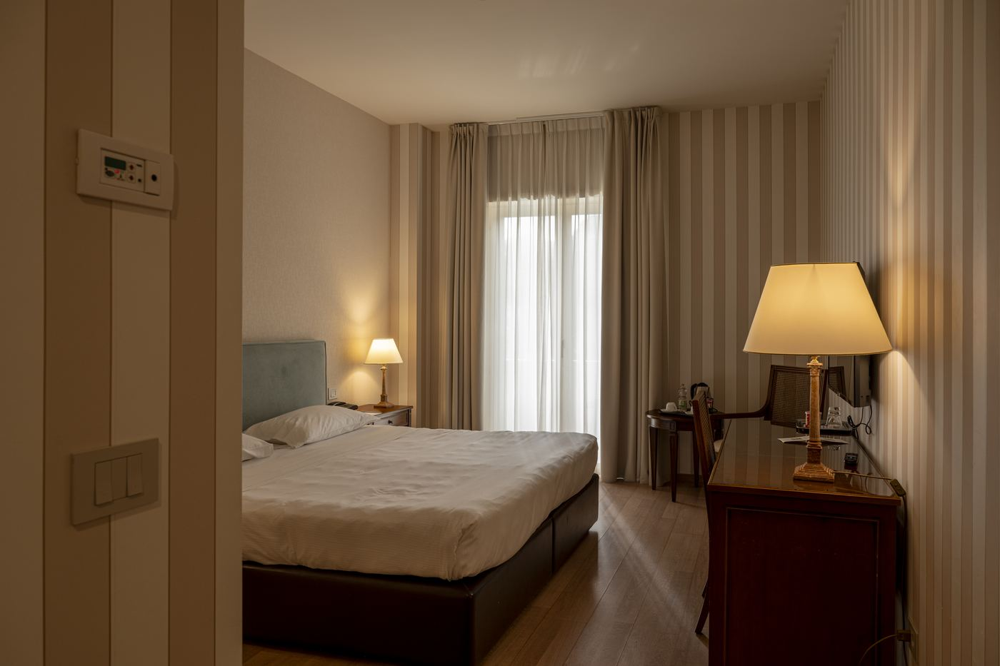

Sono le sette e mezza del mattino a Linate. Hai già risposto a dodici email, bevuto un caffè di corsa al bar del gate e ripassato le slide della riunione di oggi pomeriggio. Un'ora dopo atterri a Pescara. Ti aspettano due giorni pieni: incontri con un cliente, una cena di lavoro, una call con Milano che sicuramente durerà più del previsto.
In giornate così, l'hotel non è solo un posto dove dormire. È la tua base operativa, il tuo ufficio, il tuo spogliatoio e, a volte, anche il tuo ristorante. E se sbagli hotel, te ne accorgi subito.
Dieci minuti, e sei già arrivato
Dall'aeroporto di Pescara a Villa Maria Hotel & Spa ci vogliono circa dieci minuti in auto. Se invece arrivi in auto da nord, l'uscita dell'A14 Pescara Sud – Francavilla al Mare è a pochi minuti. Parcheggi gratis (ci sono 100 posti auto) e sei dentro.
È una piccola cosa, ma chi viaggia spesso per lavoro lo sa: ogni minuto risparmiato negli spostamenti è un minuto in più per lavorare, o per respirare.
La prima impressione è quella che conta. Villa Maria è un hotel 4 stelle sulle colline di Francavilla al Mare, immerso in un parco privato di sei ettari tra pini e ulivi secolari. Dalla terrazza si vede l'Adriatico. Dopo il rumore di Milano, il silenzio quasi sorprende.

La camera diventa il tuo ufficio
Check-in rapido, chiave in mano e sei in camera. Il Wi-Fi è gratuito, le camere sono silenziose e alcune dispongono di una scrivania comoda per lavorare con il laptop. Apri il computer, sistemi le ultime slide, ti colleghi alla call delle undici. Nessuna distrazione, nessun rumore di traffico. Solo il verde fuori dalla finestra.
Se ti serve stampare un documento all'ultimo minuto, c'è il business center. Se hai bisogno di un caffè, c'è il bar. È tutto pensato per permetterti di concentrarti su ciò che conta.
Il pomeriggio di lavoro
Il cliente ti aspetta a Pescara, oppure in zona industriale verso Chieti Scalo. Da Villa Maria sei in posizione strategica: vicino all'autostrada, vicino alla città, ma abbastanza lontano dal caos per poter staccare quando torni.
E la cosa migliore è proprio questa: quando torni.
Le sette di sera: il momento più importante della giornata
Rientri in hotel con la testa ancora piena di numeri e di proposte. Normalmente, in un altro albergo, accenderesti la TV e ordineresti qualcosa in camera. Qui no.
Scendi alla Linfa Spa. Ogni ospite ha diritto a un percorso benessere gratuito di due ore, basta prenotare. Ci sono la piscina con idromassaggio, il bagno turco, la sauna, la doccia emozionale e una sala relax con tisane. Venti minuti di sauna e la tensione del giorno comincia a sciogliersi. Se preferisci muoverti, c'è la palestra. E se hai voglia di sfogare un po' di competitività, c'è anche il campo da padel (su prenotazione, a pagamento). Una partita veloce con un collega vale più di qualsiasi attività di team building.
Dalle camere Superior si accede alla spa direttamente dal proprio piano. Scendi in accappatoio, risali rilassato. Semplice.
La cena che fa la differenza
Alle nove sei a tavola con il cliente. Il ristorante di Villa Maria propone piatti di carne e di pesce, della cucina internazionale e della tradizione abruzzese. Un buon Montepulciano dalla cantina dell'hotel, un piatto di pesce dell'Adriatico, la vista sulle colline al tramonto. La conversazione cambia tono. Si parla ancora di lavoro, certo, ma in modo più aperto, più umano. Spesso è proprio in questi momenti che nascono le idee migliori e si chiudono gli accordi.
È il vantaggio di un hotel ristorante con questa qualità: non devi prenotare altrove, non devi spostarti in taxi. Accompagni il tuo ospite dalla terrazza al tavolo, e dopo cena sei a due minuti dalla tua camera.
Il mattino dopo
La colazione a buffet apre alle 7. Hai il tempo per un caffè, qualcosa di fresco, un ultimo sguardo alla mail prima della riunione delle 9. Il check-out è entro le 11 e c'è anche il check-out rapido, quindi non perdi tempo alla reception. Se il tuo volo è nel pomeriggio, puoi lasciare i bagagli in hotel e ritirarli più tardi.
Sali in macchina e ti rendi conto di una cosa strana: hai lavorato due giorni pieni, ma non sei esausto. Anzi.
Perché scegliere Villa Maria per un viaggio di lavoro
Molti hotel business a Pescara offrono una camera e il Wi-Fi. Villa Maria offre qualcosa di diverso: la possibilità di lavorare e recuperare al meglio, senza uscire dalla struttura. Per chi passa la vita tra aerei, sale riunioni e cene di lavoro, questa differenza si sente.
Il prossimo martedì a Pescara, prova a fermarti qui.